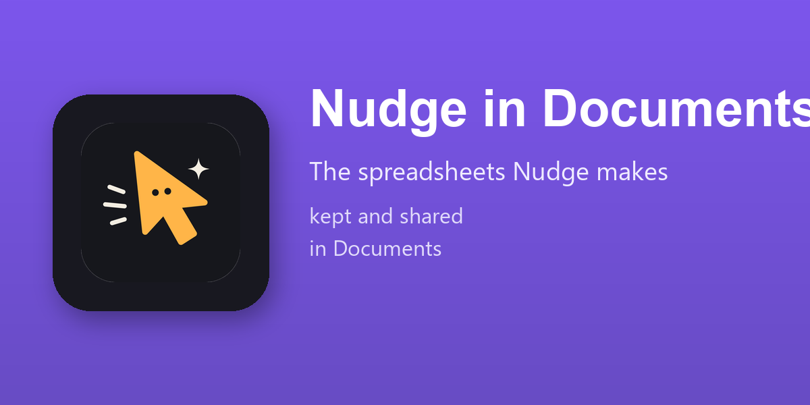

Each spreadsheet Nudge builds becomes a document of yours, in your Documents, where the folders, the tags and the rights of the app apply.
Work on it together, keep its versions, share it with a link, download it as .xlsx: everything the Documents spreadsheet editor does.
Installed by itself where Nudge Spreadsheets and the Documents Spreadsheet module of Odoo 19 Enterprise are both there. Nothing to configure.